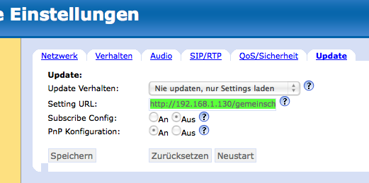

Provisioning von SIP-Telefonen
Unter Provisioning versteht man das automatische Versorgen von Telefonen mit der notwendigen Konfiguration, (SIP-Benutzername, Paßwort usw.) so daß man am Gerät selber normalerweise gar nichts mehr einstellen muß. Dieser voll-automatisierte Ablauf wird von Gemeinschaft für folgende Telefone unterstützt:
- Snom 300, 320, 360, 370
- Snom M3
- Aastra 51i, 53i, 55i, 57i
- Siemens OpenStage 20, 40, 60, 80
- Grandstream BT ..., GXP ...
Wie das im Detail funktioniert hängt natürlich vom eingesetzen Telefon ab. In der Regel findet folgender Ablauf statt, der davon abhängt ob und wie der DHCP-Server konfiguriert wurde.
Auf der Gemeinschaft-Installations-CD wird per Default kein DHCP-Server installiert, da in den meisten Netzen bereits einer vorhanden ist.
| DHCP-Server mit spezieller Konfiguration | DHCP-Server ohne spezielle Konfiguration | gar kein DHCP-Server |
|---|---|---|
| • Telefon startet und sendet DHCP-Anfrage | • Telefon startet und sendet DHCP-Anfrage | • Telefon startet |
| • DHCP-Server weist IP-Adresse zu und übergibt die Konfigurations-URL von Gemeinschaft | • DHCP-Server weist IP-Adresse zu | • Telefon verwendet die fest eingestellte IP-Adresse. |
| • Telefon ruft die Konfiguration ab | • Telefon ruft die Konfiguration ab | • Telefon ruft die Konfiguration ab |
Nur in dem Fall mit besonderen
Einstellungen auf dem DHCP-Server
wird die Konfigurations-URL von Gemeinschaft automatisch an
die Telefone übergeben. Ansonsten muß sie schon vor
dem Neustarten des Geräts an diesem eingestellt werden.
Der Parameter heißt i.d.R. Settings URL
,
Settings Server
o.ä.
Snom mit Plug & Play (PnP)
Gemeinschaft enthält einen Plug-&-Play-Server
speziell für Snom-Telefone der 3xx-Serie, der
von der Installations-CD direkt eingerichtet wurde.
Normalerweise (wenn sich die Geräte im gleichen Netz
befinden) können Sie das Telefon einfach einstecken
und müssen nichts weiter tun. Auf der Shell des
Gemeinschaft-Servers können Sie mit
tail -f /var/log/apache2/access.log
beobachten daß das Gerät beim Starten auf den
Provisioning-Server von Gemeinschaft zugreift.
Sollte dies in Ihrem Netz nicht möglich sein, dann lesen Sie bitte den folgenden Abschnitt.
Snom 370 (und andere Snom 3xx)
Bitte drücken Sie am Snom die ?
-(Help
)-Taste
um die IP-Adresse des Telefons zu erfahren. Öffnen Sie dann
per Browser das integrierte Web-Interface des Geräts, und
gehen Sie auf das Menü Erweitert
/Advanced
.
Falls Sie nach einem Adminstratorlogin
gefragt werden:
Die Werkseinstellung ist 0000
. Unter dem Reiter Update
geben Sie bitte folgende URL bei der Einstellung Setting URL
ein:
http://IPADRESSE/gemeinschaft/prov/snom/settings.php?mac={mac}
Ersetzen Sie bitte IPADRESSE durch die IP-Adresse
Ihres Gemeinschaft-Servers, die sich auf der Kommandozeile mit
dem Befehl
ifconfig eth0
herausfinden läßt.
also z.B.:
http://192.168.1.130/gemeinschaft/prov/snom/settings.php?mac={mac}
Bitte geben Sie den Zusatz {mac} am Ende der URL genau so ein. Das Snom ersetzt diesen Platzhalter beim Abrufen der Konfiguration selbständig durch seine MAC-Adresse.

Speichern Sie die Einstellungen und starten Sie das Telefon neu
(Reboot
). Auf der Shell des Gemeinschaft-Servers können
Sie mit
tail -f /var/log/apache2/access.log
prüfen daß das Gerät beim Starten auf den
Provisioning-Server von Gemeinschaft zugreift.
Hinzufügen von Endgeräten in das Provisioning
Geschieht völlig automatisch!
Wenn Sie sich als Administrator am Web-interface von Gemeinschaft anmelden können Sie unter dem Menüpunkt Provisioning → Telefone sehen daß das neue Gerät hinzugefügt wurde.